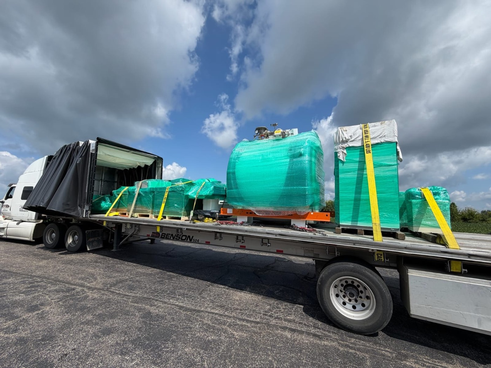
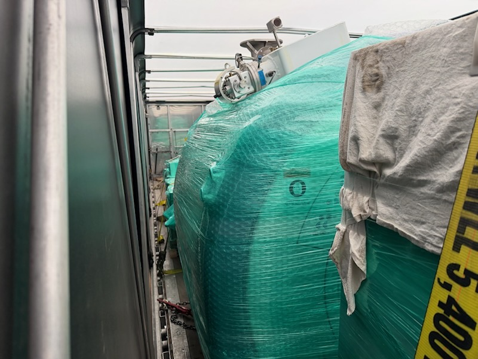
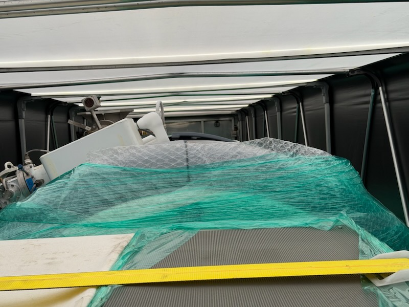
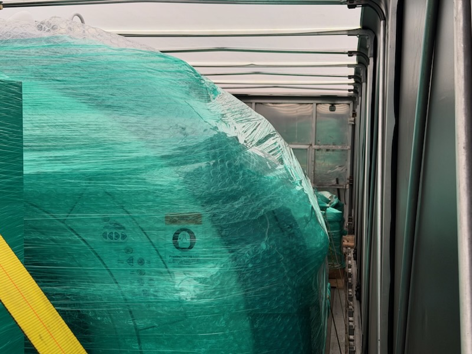

A Conestoga is a flatbed or step-deck with a retractable tarp on a rolling frame. You load it from the top or the sides like an open deck, then roll the curtain closed for weather protection — no manual tarping. Freight still gets wrapped, blocked, and strapped to the deck exactly like a flatbed load: tie-downs go to the deck rails and winches, never to the tarp frame, with total working load limit of at least half the cargo weight. Expect roughly 2,000-3,500 lbs less payload and about 8 ft of usable interior height on a standard deck.
A Conestoga solves a problem that costs open-deck shippers money every week: freight that needs to be loaded like a flatbed load but has to arrive dry and clean. It is a flatbed or step-deck with a rolling tarp system built onto it — a curtain on a sliding frame that retracts to one end and rolls back over the load. Crane the machine in from the top, roll the curtain shut, done. No tarp crew, no two guys on top of a load in the wind.
What it does not do is secure the freight for you. Everything below the curtain is still an open-deck load, and it gets built like one.

What a Conestoga actually is
The name comes from the original manufacturer and has become the industry shorthand for any rolling-tarp trailer; you will also hear curtain-side and roll-tarp. Mechanically it is simple: a set of bows carries a heavy vinyl curtain on rollers, and the whole assembly slides along rails on the trailer deck. Retracted, it stacks into about 8 feet at one end and leaves the rest of the deck completely open.
They are built on both platforms:
- Flatbed Conestoga — deck around 5 ft off the ground, 48 to 53 ft long. The default.
- Step-deck (drop-deck) Conestoga — lower rear deck around 3.5 ft, which buys back the interior height the tarp frame takes away. This is the one you want for tall machinery.
The two numbers that decide the trailer
People get burned on Conestoga loads in exactly two ways, and both are measurement problems.
Height. On an open flatbed you measure against the 13'6" legal road height and you have roughly 8'6" of cargo height to play with. Inside a Conestoga you are measuring against the bows. Usable interior height on a standard flatbed Conestoga runs roughly 8 ft over the deck, and the frame narrows the usable width to a bit over 8 ft. A drop-deck Conestoga opens that up to roughly 9'6" to 10 ft. If your machine is 8'4" tall, it fits on a flatbed and does not fit under a standard Conestoga curtain — measure the crate, not the machine, and measure to the highest point including skids and lifting lugs.
Weight. The tarp system is not free. It adds roughly 2,000 to 3,500 lbs of tare weight, which comes straight off your payload. A flatbed that hauls 48,000 lbs legal becomes a Conestoga that hauls closer to 44,000 lbs. On a heavy machine that is the difference between one truck and a permit conversation.
Packing: the load is protected before it is loaded
The curtain keeps rain and road grit off. It does not keep condensation, vibration, or a forklift driver off. Every machine we put in a Conestoga gets the same prep as an enclosed move:
- Shrink-wrap or stretch-wrap over the whole unit, sealed at the base so moisture cannot wick up.
- Desiccant packs and a moisture barrier on anything with bare machined surfaces, electronics, or a long run ahead of it. Temperature swings between a Texas afternoon and a Midwest night put water on cold steel.
- Padding at every contact point — corner boards, moving blankets, and edge protectors between the wrap and any strap. Webbing under tension will cut through wrap and mark paint.
- Fluids drained or capped, loose components removed and crated separately, doors and panels latched or banded.
Full method in our guide on preparing a machine for shipping.

Loading: open the deck, then treat it like a flatbed
The whole advantage of a Conestoga is access. Roll the curtain fully to one end and you have a bare deck that takes a crane pick from directly overhead or a forklift from either side — the same freedom as an open flatbed, which a dry van simply cannot offer. Nothing has to be pushed in end-first down a 53 ft box.
Sequence that matters:
- Plan the placement before the pick. Heaviest item over or slightly ahead of the trailer axles, weight spread so no axle group runs over its limit. A Conestoga's lighter payload ceiling makes axle math tighter, not looser.
- Land on hardwood dunnage. Dunnage creates level bearing points, keeps forks and slings retrievable, and stops the load from point-loading the deck.
- Block and brace before you strap. Chocks and cleats fore-aft, bracing side-to-side. Blocking stops movement; straps only hold the load against the blocking. This is the part people skip — see blocking, bracing and dunnage.
- Leave curtain clearance. Nothing should touch the curtain or the bows. A load rubbing vinyl at 65 mph tears the system and voids the weather protection you paid for.
Securement: strap to the deck, never to the frame
This is the one rule people get wrong on a rolling-tarp trailer. The tarp frame is weather protection, not structure. Bows, rails, and curtain hardware are not rated tie-down points. Every strap and chain goes to the deck: stake pockets, rub rails, D-rings, winches, and rated anchor points on the frame of the trailer itself.
The federal numbers are the same as any open deck under 49 CFR 393:
- Aggregate working load limit of at least 50% of cargo weight. A 20,000 lb machine needs tie-downs totalling at least 10,000 lbs of WLL. Four of those 5,400 lb straps gets you 21,600 — comfortable. Two does not.
- Minimum tie-down count by size. One per 10 ft of article length, with a floor of two on anything over 5 ft or over 1,100 lbs, and an additional tie-down for each further 10 ft or part of it.
- Edge protection everywhere webbing crosses a corner, a machined edge, or bare steel.
- Chain for heavy iron, webbing for finished surfaces. Chains and binders on skids and frames; 4-inch straps over wrapped and padded machinery.
Then re-check. Tie-downs relax as a load settles — the first 50 miles pull the most slack out of any strap.

When a Conestoga is the right call — and when it is not
Use one when: the freight has to be crane- or side-loaded but must stay dry; the equipment is high-value, painted, wrapped, or partly exposed; you are moving in and out of plants where tarping on site is impractical; or you want to keep the load out of sight. It also removes the tarping delay entirely, which on a multi-stop machinery run is real hours.
Skip it when: the load is over-dimensional and will not fit the frame envelope — a Conestoga cannot carry anything wider or taller than its own curtain, so genuine oversize freight goes on an open flatbed, step-deck, or lowboy and gets tarped or shipped bare. Skip it too when you need every pound of payload, or when the freight is dirty, raw, or weather-indifferent steel where tarping is not worth the rate premium.
Conestoga capacity is also thinner than flatbed capacity in most lanes, so it books further out and prices above a standard flatbed. Worth it on the right load; wasteful on the wrong one. If the equipment is sensitive enough to need real climate and security control, the answer is an enclosed or air-ride van instead.

The short version
- A Conestoga is a flatbed or step-deck with a retractable tarp — flatbed loading, van-style weather protection, zero manual tarping.
- Measure against the bows, not the road. Roughly 8 ft of interior height on a standard deck, more on a drop-deck.
- Budget 2,000 to 3,500 lbs of lost payload for the tarp system.
- Wrap, pad, dunnage, and block the freight exactly as you would for an open deck.
- Tie-downs go to deck rails and winches — never to the tarp frame — at 50% of cargo weight in aggregate WLL, minimum.
Got machinery that needs to load like a flatbed and arrive like a van shipment? Send dimensions, weight, and both site conditions and we will spec the trailer, the wrap, and the securement around it — get a quote.